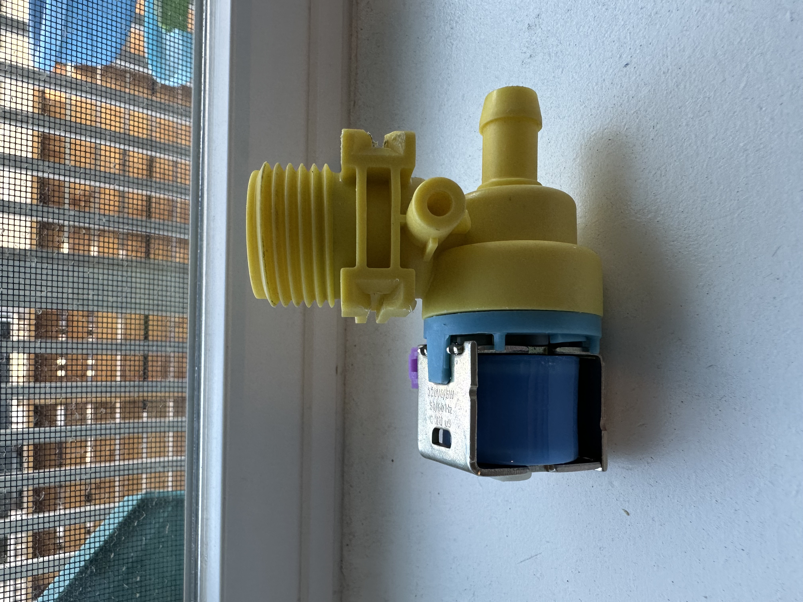
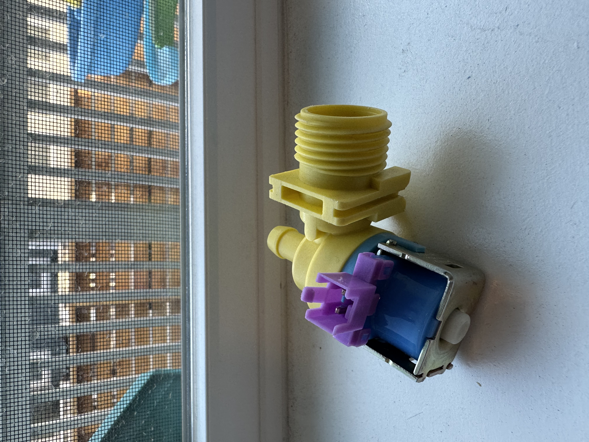
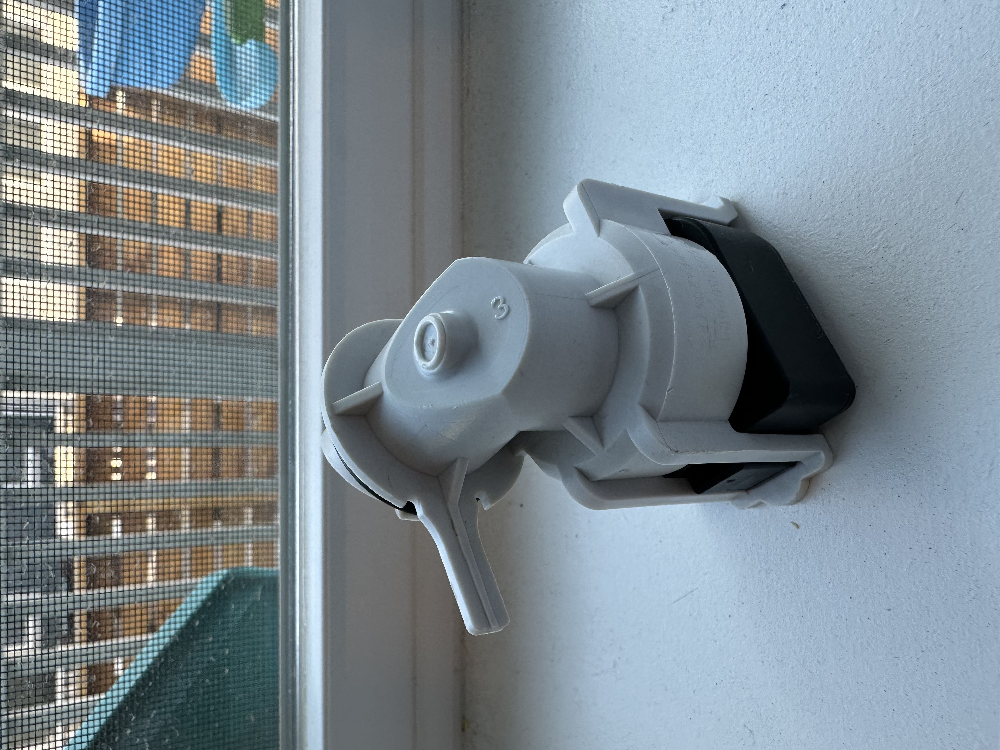
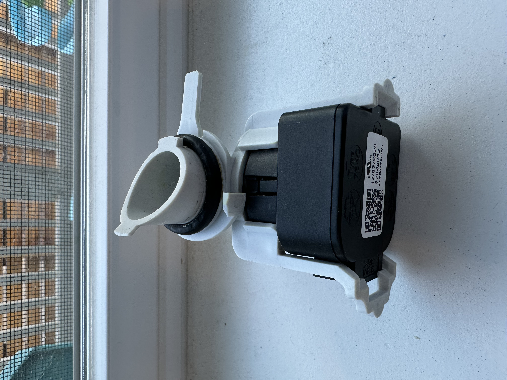

Reparining a Dishwasher Not Filling with Water
Published: 2025-11-22
After traveling overseas for three weeks, I returned home to realize, to my frustration, that our dishwasher (GE GDT635HSM455) was not functioning properly, which was weird because I had used it the day before I left home for my flight. It seemed to be starting like normal, but it was not doing its regular cycles. It was making a sound as if it was getting ready but never actually taking in water and starting its cleaning cycles. This sound continued for some time and stopped eventually without filling the tub with water.
I initially thought that there might be a problem with the machine filling with water. At least, that was how it looked at first glance. I did my searches around this observation, and the common suggestion was to replace the water inlet valve after making sure the water supply hose was clear of any debris or dirt and that the water pressure was sufficient. The water inlet valve is essentially an electromechanical relay that is responsible for switching the water supply on and off to let water into the dishwasher.
Checking the water inlet valve is straightforward, but you need to make sure that you shut off the water supply valve and the power going into the dishwasher first. Follow the supply hose and see where it connects underneath your machine. It is a large threaded “valve” that looks similar to the one in the picture below.
 
Unthread it with caution by putting something under it to prevent spills. Check both the inlet valve and hose threads for any blockage. Clean these entries if necessary. There is a 2-terminal electrical connection going into the valve, where it receives the electrical signal from the main control board to open or close the valve. In some older machines this signal is the mains voltage (120V), but my inlet valve works with a DC voltage of 13.8V. So, the main control board should send this amount of voltage to the inlet valve for it to close the relay and let the water in. But if the inlet valve is faulty, this simply won’t work. This is where we need to check if the inlet valve is still functioning. Inlet valves are simply relays that have a solenoid in them that can pull metal when magnetized. This solenoid has an internal resistor, which could be written on the valve. If the solenoid is still electrically intact, you should be able to measure this resistor value across the terminals. I took out my inlet valve and measured its resistor, and it read around 19 ohms, which was consistent with the labeled resistor value.
If the valve is not the problem, then the second check should be the electrical connection coming from the control board. Note that you need to take this measurement when the machine is powered up and starting the cycle. I disconnected the electrical connection to the valve and probed the two terminals with a multimeter and started the machine. I was reading no voltage, which made me believe that it was something to do with the control board. If that had been the issue, fixing it would have gone beyond my skills, and we would have probably replaced the machine with a new one because control boards are expensive (plus you need to bring in a service technician).
Then I started doing more research about the issue and learning about how a dishwasher actually works. People reported similar issues, and one other common suggestion was to check the float switch to make sure nothing was stuck under it. My dishwasher model does not have a float switch, but the role of this switch provided me with some clues. I found out that dishwashers start their cycles by draining any leftover dirty water in the tub before they fill with water. The drain pump starts running to suck the dirty water until there is almost no water in the tub. This is where the float switch comes in. It can detect the water level by rising with water and lifting a mechanical arm, triggering a sensor. If anything is stuck in it, then it can’t go back down, and the machine continues to think there is still water at the bottom. So, it keeps running the drain pump to suck the water without even starting the water fill process by closing the water inlet valve. That was also what was happening with my dishwasher. It was running the drain pump continuously, making that weird sound, and never starting the fill process, thus sending no voltage to the control terminals. Learning about the dishwasher state machine helped me identify the core problem.
But my dishwasher still did not have a float switch on the inside of the machine. I needed to find it. Later, I came across a Reddit comment mentioning a similar issue. It said that newer models no longer have a float switch but instead have something called a “pressure sensor” located underneath the machine, which looks like an elbow, as shown below, and works similarly to a float switch. It basically measures the water pressure electronically and determines the water level to stop draining. I located mine and took it out. It was so clogged, and there was so much gunk in it. I cleaned it and put it back in. And this time I captured the moment when the machine sent 13.8V to the water inlet valve to start the water fill process. I connected the water inlet valve and restarted the cycle, and voilà! It worked! Well, until it stopped after ~30 minutes in mid-cycle. I was back where I started.
 
But this time I knew the problem was definitely the pressure sensor. I got the part number, found a replacement on Amazon, and ordered it. I replaced the old pressure sensor with the new one, and now the machine works as normal. But the whole troubleshooting and fixing process taught me a lot about dishwashers, their working principles, and potential problems.